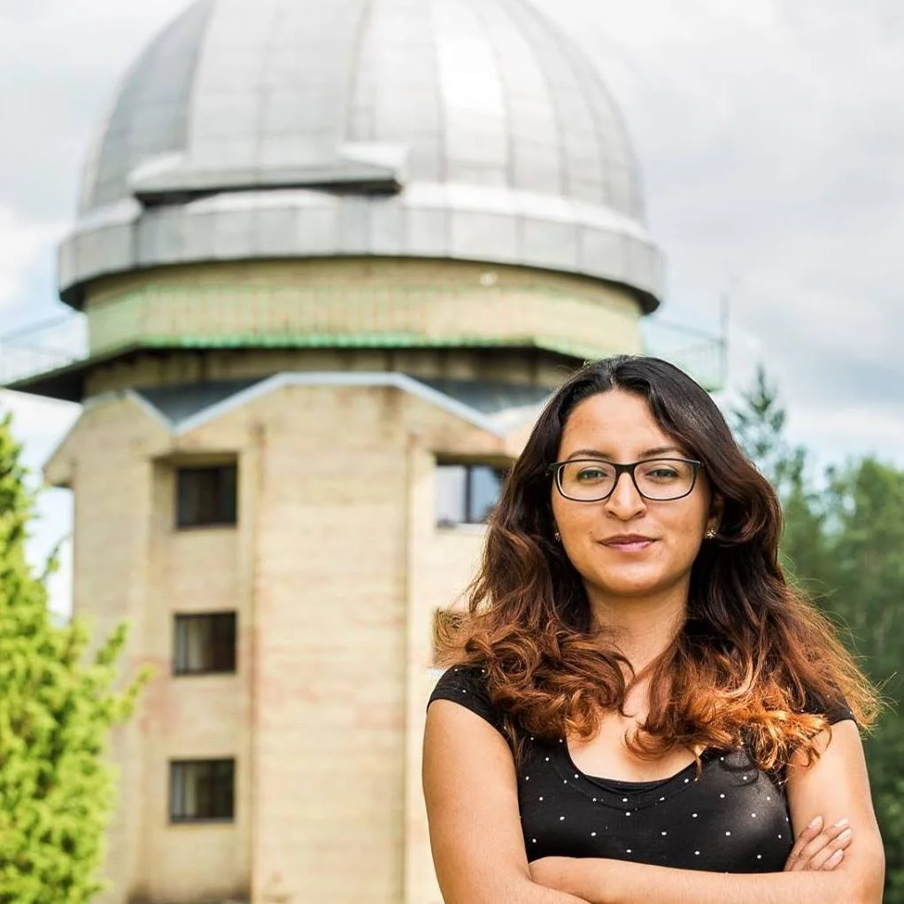
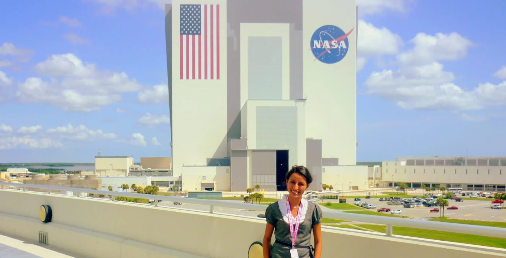

Cosmic Perspective: Andrea Guzmán-Mesa, M.Sc., Astrophysicist

Updated: Oct 28
Guzmán-Mesa at Moletai Astronomical Observatory in Lithuania. Photo by Andrius Zigmantas.
Andrea Guzmán-Mesa, M.Sc., is a Ph.D. student in astrophysics at the University of Bern. She studies exoplanets: those beyond our Solar System. To people who wonder “why do we study other planets if there are worse problems happening here on Earth?” she responds that doing so helps us learn more about our own. For example, “the greenhouse effect was discovered first on Venus,” and helped us “understand what was going on here and what our fate could be.” Investing in space science also leads to technological advances: she cites microchips and disposable diapers as two inventions resulting from the Apollo space program.
In her Ph.D. research, Guzmán-Mesa studies how we can couple our knowledge of the atmospheres and interiors of a particular class of exoplanets: Neptune-sized planets orbiting their host stars closely. She employs transmission spectroscopy: when a planet passes in front of its host star, some of the starlight is transmitted through the planet’s atmosphere. Different atoms and molecules in the atmosphere absorb different wavelengths, i.e., different colors, of light at different degrees. As a consequence, the planet appears larger or smaller, depending on which wavelengths of light its atmosphere transmits. This produces a spectrum that describes the composition of the planet’s atmosphere. She is particularly interested in molecules like methane, oxygen, and water. These molecules are what astronomers call biomarkers, elements that could indicate the presence of life if found in the right amounts.
Guzmán-Mesa also explains that the compositions of planets’ atmospheres and interiors are related; studying this interaction is key. By measuring the mass and radius of exoplanets, she can estimate their mean density and infer constraints on their composition and interior structure. This “gives a rough idea of what they are made of.” Part of her work requires comparing numerous computer models to massive volumes of observational data. She uses machine learning, computer algorithms that learn and improve with experience, to cut analysis times “from days or months to seconds or minutes.”
Guzmán-Mesa hails from Bogotá, Colombia, site of the first astronomical observatory built in the Americas. Carl Sagan’s Cosmos inspired her lifelong interest in astronomy (though she watched it, initially, to practice English). In high school, she reached out to a Colombian scientist working at NASA, who invited her to visit, along with an astronomy club of which she was a member. Experiencing NASA firsthand confirmed her desire to “do something related to space.” Having a mentor and role model was also crucial: “I truly believe that you don’t become what you don’t see,” she says.

Guzmán-Mesa’s pivotal NASA visit.
While Guzmán-Mesa knew she wanted to study the cosmos, she was offered a scholarship to study either mathematics or engineering at a university with a small astronomical observatory that had sent a small satellite to space. She chose mathematics, in hopes of broadening her horizons later. Her positive high school experiences helped her withstand sexism and isolation as an undergraduate student. In a student body of over 5,000, she was the only female graduate in mathematics in her year.
Guzmán-Mesa’s tenacity and mathematical background served her well during her astronomy and astrophysics masters. Contrary to the romanticized idea of astronomical research as lonely nights in a remote observatory spent peering through a telescope, she relies mainly on computers and models. In addition to math, she recommends programming (specifically, the Python language) and data science skills as critical to success in her field. Effective communication and networking are also essential for academia—not to mention dedication. Aspiring astronomers need to be “curious and persistent,” she says. Enjoying research and problem-solving is paramount: “you don’t need to be a genius or a technological master.”
As a Ph.D. student, Guzmán-Mesa works independently, but not alone: “something I love about astronomy is collaboration.” Astronomers “have to join forces” to make breakthroughs, tackling “questions we have had for ages, like are we alone in the universe?” Recent discoveries like that of the potential biomarker phosphine on Venus, as well as her own exoplanet research, “open the door to new knowledge,” and of course, “new questions.”
Guzmán-Mesa finds her research most rewarding professionally when effort pays off (e.g., the publication of a paper) and personally, when she can benefit members of under-represented groups. “Challenges are also opportunities,” she says. “As part of an under-represented group in science, I think we have a great power to lead initiatives to make science a more inclusive place.” One such initiative is CHIA (Colombianas Haciendo Investigación en Astrociencias), “female Colombians doing research in astroscience,” which Guzmán-Mesa and colleagues founded to “gather female astronomers in the country, to make us visible, and to mentor the new generation of young astronomers.” Fittingly, “Chía” is also the name of the goddess of the moon in the Chibcha indigenous language. With CHIA and other outreach work, Guzmán-Mesa hopes that attitudes toward women in science, along with working conditions, will continue to improve.
Guzmán-Mesa is optimistic about the future of space science as a field. The launch of new space missions and telescopes will bring “increased data quality and therefore more information about the universe, and the ability to answer questions with a bit more certainty.” In her own future, she sees the potential to contribute to science policy and diplomacy. In the meantime, she has plenty of research to do. In the words of her kindred spirit Carl Sagan, “somewhere, something incredible is waiting to be known.”
*Thank you to Andrea Guzmán-Mesa, M.Sc., for sharing her story with 500WS Bern-Fribourg. Click here to find out more about her experience and here for more about CHIA.
Gabrielle Vance
M.Sc. Geology
From the 500 Women Scientists Bern-Fribourg archive. Originally published 27 October 2020.
Explore more stories